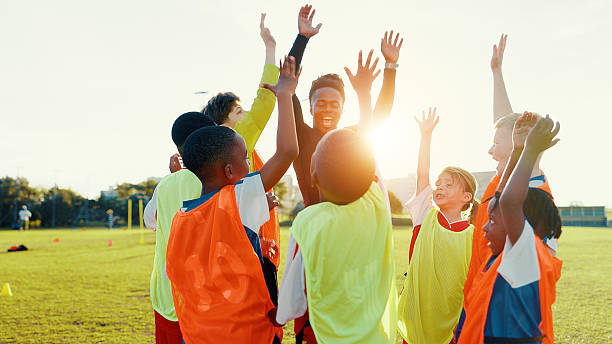
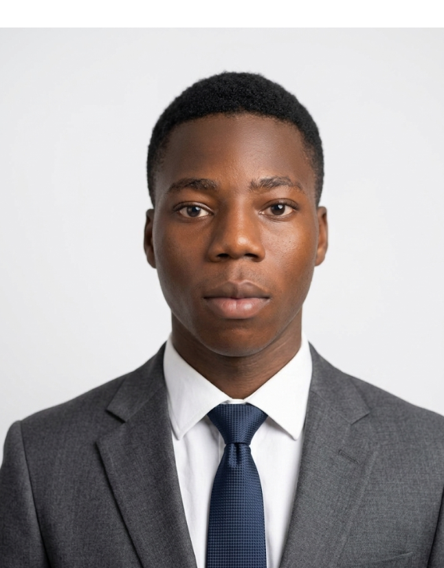

Our Mission
To empower the world’s most vulnerable children by providing health, education, and a pathway to hope.
About Us
To empower the world’s most vulnerable children by providing health, education, and a pathway to hope.
We combine community-led programs with enduring support services built on trust and transparency.
Every donation is tracked, every supporter is valued, and every child receives care focused on long-term impact.
Our Journey
The R-Rise Foundation was established with a simple yet profound vision: to provide vulnerable children in communities with access to health, education, and hope. Our founders recognized that too many talented young minds were being held back by poverty, lack of healthcare, and limited educational opportunities.
We began by listening to community members, understanding their needs, and building programs that address root causes rather than symptoms. Over the years, we've grown from a small grassroots initiative to a recognized force for change, but our commitment to community-led, transparent work remains unchanged.
Vulnerable children face multiple overlapping challenges: malnutrition, lack of school access, health emergencies without support, and limited social safety nets. We address all these dimensions simultaneously through integrated programs. Every child we support receives not just aid, but a pathway to independence and dignity.

Leadership
Experienced leaders and passionate advocates dedicated to sustainable community change.
Founder & Executive Director
Adeyinka brings 15+ years of community development experience. His vision for R-Rise was born from direct engagement with families, understanding their dreams and challenges firsthand.
Program Director
A pediatrician and education advocate with expertise in designing integrated health and education programs. Chidinma ensures all R-Rise initiatives are evidence-based and community-responsive.

Volunteer Coordinator
Daniel coordinates our volunteer network and ensures meaningful engagement. He believes every volunteer has unique skills to offer and works to match them with our most pressing community needs.
Trust & Integrity
We believe donors and communities deserve complete clarity on how resources are used.
We commit to transparent solicitation of funds. No misleading claims, no inflated impact figures. We share both our successes and our challenges openly.
Our programs are designed with, not for, the communities we serve. Local voices guide our priorities, and we measure success by their indicators of change.
Every donation is tracked meticulously. We publish annual impact reports and financial statements. Donors can request detailed breakdowns of how their contributions were used.
We undergo independent financial and program audits annually to ensure compliance with best practices and verify that our work achieves stated outcomes.